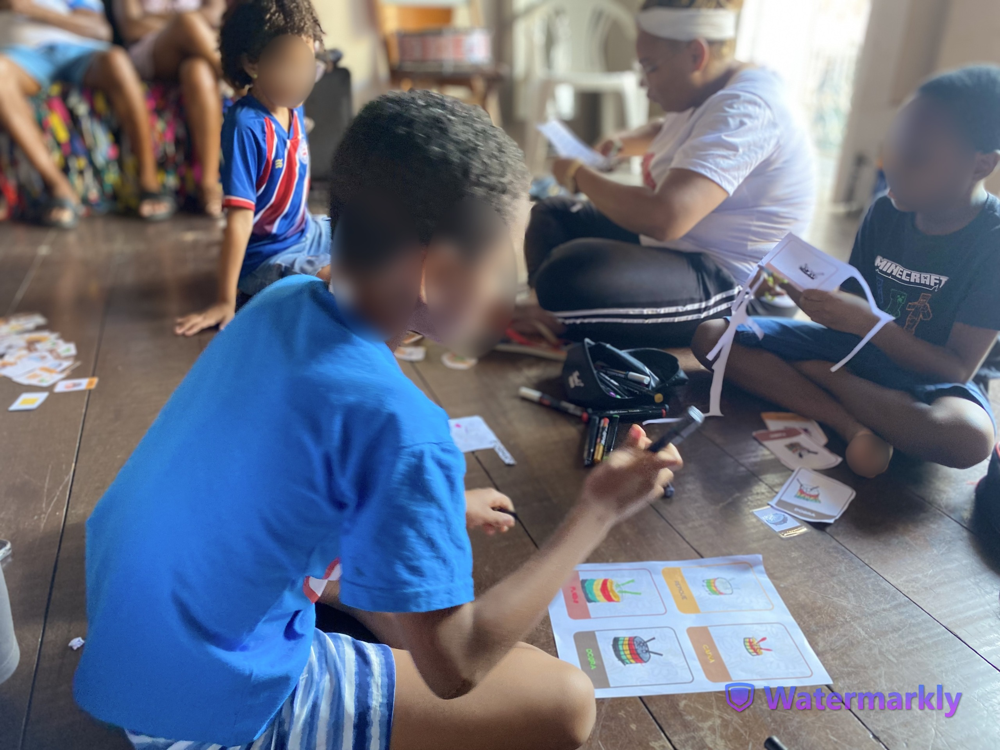
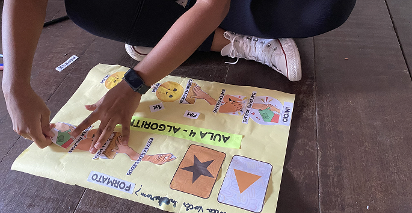
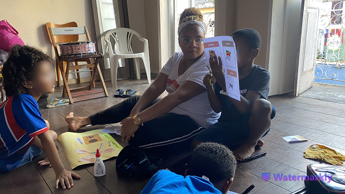
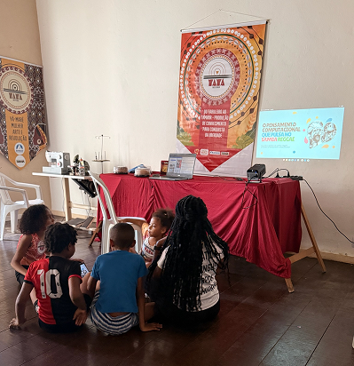
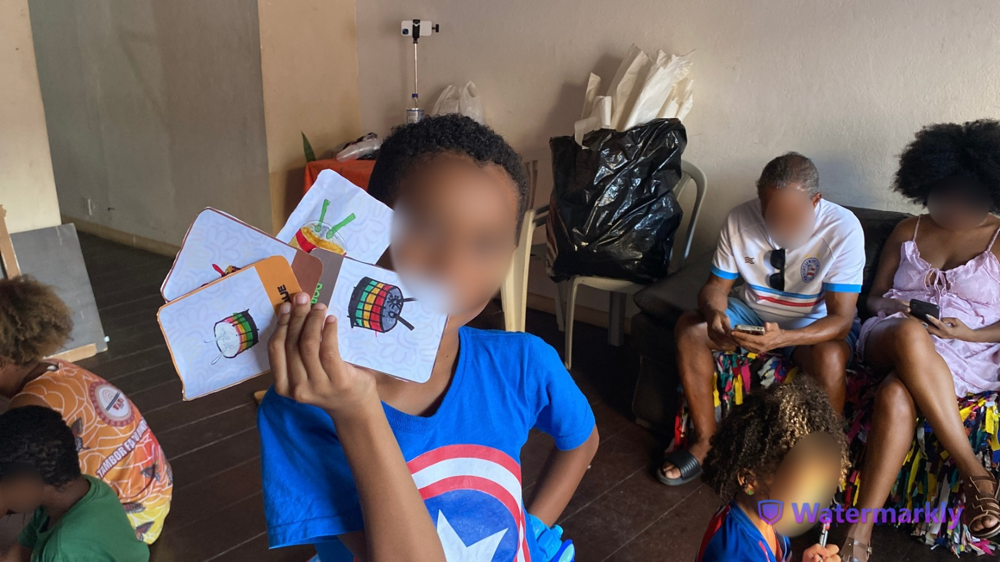
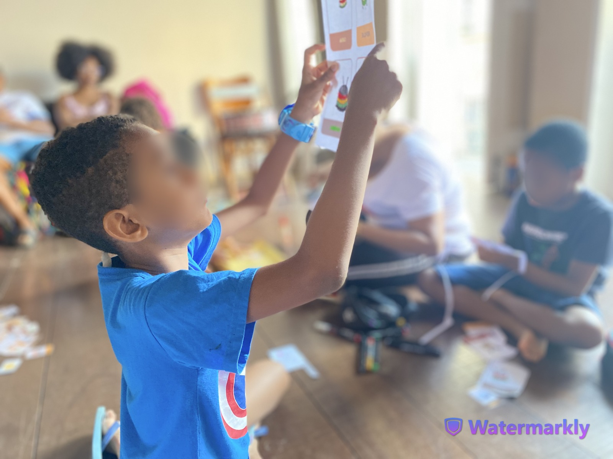
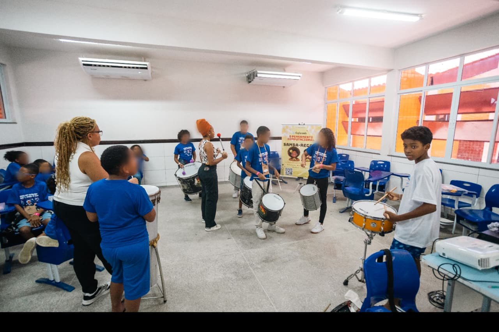

01
Acolhimento e Introdução
Momento inicial de acolhimento das crianças, apresentação da proposta e criação de vínculos entre os participantes — fundamental para a construção coletiva do aprendizado.

Chegada e acolhimento Apresentação da proposta
Apresentação da proposta

Início das atividades
Explorando os materiais02
Decomposição e Padrões Rítmicos
As crianças aprenderam a decompor sequências musicais em partes menores e a identificar padrões repetitivos — pilares do pensamento computacional vivenciados através do ritmo.

Quebrando o ritmo em partes Padrões na percussão
Padrões na percussão
 Sequenciamento
Sequenciamento
 Prática coletiva
Prática coletiva
Identificando padrões
03
Abstração e Algoritmos
A etapa mais avançada: as crianças criaram suas próprias sequências lógicas e aprenderam a abstrair elementos musicais para representar instruções computacionais.

Abstração com fichas
Criando algoritmos Executando o algoritmo
Executando o algoritmo

Flashcards pedagógicos